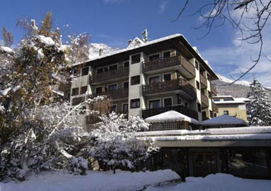
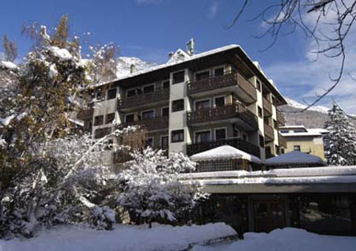
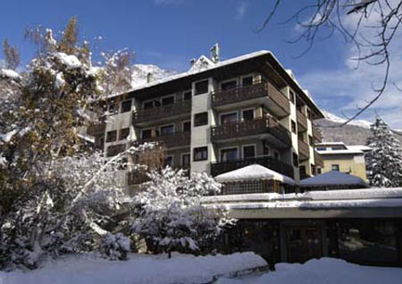

| IFIP WG 2.4 Member's Meeting, April 2008, Bormio, Italy. |

The April 2008 member's meeting will take place in Bormio, Italy at the Hotel Rezia from Sunday April 6th to Friday April 11th, 2008. Bormio was the site of the 2005 Winter Olympics, our conference location is charming four star hotel located in the center of Bormio.
As usual the meeting will be a mixture of talks on on-going research with opportunities for members to interact in an informal setting. Formal talks will be limited to 30 WG2.4 minutes and time will be set aside for social activities (including skiing, global warming willing).
For any questions contact Jan Vitek.